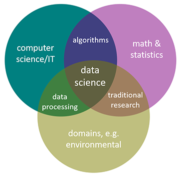
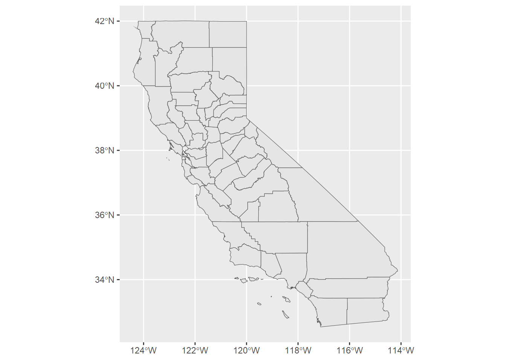

Introduction to Environmental Data Science
2026-09-04
Chapter 1 Background, Goals and Data
1.1 Environmental Data Science
Data science is an interdisciplinary field that uses scientific methods, processes, algorithms and systems to extract knowledge and insights from noisy, structured and unstructured data (Wikipedia). A data science approach is especially suitable for applications involving large and complex data sets, and environmental data is a prime example, with rapidly growing collections from automated sensors in space and time domains.
Environmental data science is data science applied to environmental science research. In general, data science can be seen as being the intersection of math and statistics, computer science/IT, and some research domain, and in this case it’s environmental (Figure 1.1).

FIGURE 1.1: Environmental data science
1.2 Environmental Data and Methods
The methods needed for environmental research can include many things since environmental data can include many things, including environmental measurements in space and time domains.
- data analysis and transformation methods
- importing and other methods to create data frames
- reorganization and creation of fields
- filtering observations
- data joins
- reorganizing data, including pivots
- visualization
- graphics
- maps
- imagery
- spatial analysis
- vector and raster spatial analysis
- spatial joins
- distance analysis
- overlay analysis
- terrain modeling
- spatial statistics
- image analysis
- vector and raster spatial analysis
- statistical summaries, tests and models
- statistical summaries and visualization
- stratified/grouped summaries
- confirmatory statistical tests
- physical, statistical and machine learning models
- classification models
- temporal data and time series
- analyzing and visualizing long-term environmental data
- analyzing and visualizing high-frequency data from loggers
1.3 Goals
While the methodological reach of data science is very great, and the spectrum of environmental data is as well, our goal is to lay the foundation and provide useful introductory methods in the areas outlined above, but as a “live” book be able to extend into more advanced methods and provide a growing suite of research examples with associated data sets. We’ll briefly explore some data mining methods that can be applied to so-called “big data” challenges, but our focus is on exploratory data analysis in general, applied to environmental data in space and time domains. For clarity in understanding the methods and products, much of our data will be in fact be quite small, derived from field-based environmental measurements where we can best understand how the data was collected, but these methods extend to much larger data sets. It will primarily be in the areas of time-series and imagery, where automated data capture and machine learning are employed, when we’ll dip our toes into big data.
1.3.1 Some definitions:
Machine Learning: building a model using training data in order to make predictions without being explicitly programmed to do so. Related to artificial intelligence methods. Used in:
- image and imagery classification, including computer vision methods
- statistical modeling
- data mining
Data Mining: discovering patterns in large data sets
- databases collected by government agencies
- imagery data from satellite, aerial (including drone) sensors
- time-series data from long-term data records or high-frequency data loggers
- methods may involve machine learning, artificial intelligence and computer vision
Big Data: data having a size or complexity too big to be processed effectively by traditional software
- data with many cases or dimensions (including imagery)
- many applications in environmental science due to the great expansion of automated environmental data capture in space and time domains
- big data challenges exist across the spectrum of the environmental research process, from data capture, storage, sharing, visualization, querying
Exploratory Data Analysis: procedures for analyzing data, techniques for interpreting the results of such procedures, ways of structuring data to make its analysis easier
- summarizing
- restructuring
- visualization
1.4 Exploratory Data Analysis
Just as exploration is a part of what National Geographic has long covered, it’s an important part of geographic and environmental science research. Exploratory data analysis is exploration applied to data, and has grown as an alternative approach to traditional statistical analysis. This basic approach perhaps dates back to the work of Thomas Bayes in the eighteenth century, but Tukey (1962) may have best articulated the basic goals of this approach in defining the “data analysis” methods he was promoting: “Procedures for analyzing data, techniques for interpreting the results of such procedures, ways of planning the gathering of data to make its analysis easier, more precise or more accurate, and all the machinery and results of (mathematical) statistics which apply to analyzing data.” Some years later Tukey (1977) followed up with Exploratory Data Analysis.
Exploratory data analysis (EDA) is an approach to analyzing data via summaries and graphics. The key word is exploratory, and while one might view this in contrast to confirmatory statistics, in fact they are highly complementary. The objectives of EDA include (a) suggesting hypotheses; (b) assessing assumptions on which inferences will be based; (c) selecting appropriate statistical tools; and (d) guiding further data collection. This philosophy led to the development of S at Bell Labs (led by John Chambers, 1976), then to R.
1.5 Software and Data
First, we’re going to use the R language, designed for statistical computing and graphics. It’s not the only way to do data analysis – Python is another important data science language – but R with its statistical foundation is an important language for academic research, especially in the environmental sciences.
## [1] "This book was produced in RStudio using R version 4.6.1 (2026-06-24 ucrt)"For a start, you’ll need to have R and RStudio installed, then you’ll need to install various packages to support specific chapters and sections. Most of these are installed from the https://cran.r-project.org/ site. You may want to go ahead and install all of the packages needed for the chapters through Chapter 4.
- In Introduction to R (Chapter 2), we will mostly use the base installation of R, with a few packages to provide data and enhanced table displays:
igiscipalmerpenguinsDTknitr
- In Abstraction (Chapter 3) and Transformation (Chapter 5), we’ll start making a lot of use of tidyverse 3.1 packages such as:
ggplot2dplyrstringrtidyrlubridate
- In Visualization (Chapter 4), we’ll mostly use ggplot2, but also some specialized visualization packages such as:
GGally
- In Spatial (starting with Chapter 6), we’ll add some spatial data, analysis and mapping packages. Note that these packages continue to be developed, especially
terraandtmap, so we might want to look for updates when we get to it:sfterratmap(we won’t use the CRAN version, but instead version 4 on github)leaflet
- In Statistics and Modeling (starting with Chapter 9), no additional packages are needed, as we can rely on base R’s rich statistical methods and ggplot2’s visualization.
- In Time Series (Chapter 12), we’ll find a few other packages handy:
xts(Extensible Time Series)forecast(for a few useful functions like a moving average)
And there will certainly be other packages we’ll explore along the way, so you’ll want to install them when you first need them, which will typically be when you first see a library() call in the code, or possibly when a function is prefaced with the package name, something like dplyr::select(), or maybe when R raises an error that it can’t find a function you’ve called or that the package isn’t installed. One of the earliest we’ll need is the suite of packages in the “tidyverse” (Wickham and Grolemund (2016)), which includes some of the ones listed above: ggplot2, dplyr, stringr, and tidyr. You can install these individually, or all at once with:
install.packages("tidyverse")This is usually done from the console in RStudio and not included in an R script or markdown document, since you don’t want to be installing the package over and over again. You can also respond to a prompt from RStudio when it detects a package called in a script you open that you don’t have installed.
From time to time, you’ll want to update your installed packages, and that usually happens when something doesn’t work and maybe the dependencies of one package on another gets broken with a change in a package. Fortunately, in the R world, especially at the main repository at CRAN, there’s a lot of effort put into making sure packages work together, so usually there are no surprises if you’re using the most current versions. Note that there can be exceptions to this, and occasionally new package versions will create problems with other packages due to inter-package dependencies and the introduction of functions with names that duplicate other packages. The packages installed for this book were current as of that version of R, but new package versions may occasionally introduce errors.
Once a package like dplyr is installed, you can access all of its functions and data by adding a library call, like …
… which you will want to include in your code, or to provide access to multiple libraries in the tidyverse, you can use library(tidyverse). Alternatively, if you’re only using maybe one function out of an installed package, you can call that function with the :: separator, like dplyr::select(). This method has another advantage in avoiding problems with duplicate names – and for instance we’ll generally call dplyr::select() this way.
Addenda: There are other methods we could look at, as well as case studies and expansions of methods we will look at. So we’ve also created an Environmental Data Science Addenda at https://bookdown.org/igisc/EnvDataSciAddenda/.
1.5.1 Data
We’ll be using data from various sources, including data on CRAN like the code packages above which you install the same way – so use install.packages("palmerpenguins").
We’ve also created a repository on GitHub that includes data we’ve developed in the Institute for Geographic Information Science (iGISc) at SFSU, and you’ll need to install that package a slightly different way.

GitHub packages require a bit more work on the user’s part since we need to first install remotes1, then use that to install the GitHub data package:
Then you can access it just like other built-in data by including:
To see what’s in it, you’ll see the various datasets listed in:
data(package="igisci")This creates a view of the data in the igisci packages, which is useful in the RStudio environment. One of the functions also built into the igisci package creates a data frame of the data in that package. We’ll be learning about data frames in the next chapter, but basically it’s a simple rectangular database with rows and columns, where columns are variables and rows are sets of observations. That function is exfiles() which you can call once you’ve loaded the igisci library as we’ve just done. To create a data frame we’ll call igisciData we’d assign it exfiles().
Then we can view it in the RStudio interface with:
We can display the contents of a data frame in various ways, one simple way using the display function of the insight package, so after we’ve installed insight with install.packages("insight"), we can use display with our newly created data frame:
| dir | file | path | type |
|---|---|---|---|
| airquality | CES4 Final Shapefile.shp | ex(‘airquality/CES4 Final Shapefile.shp’) | shapefile |
| airquality | Pollution by type US 1970 to 2016.xlsx | ex(‘airquality/Pollution by type US 1970 to 2016.xlsx’) | xls |
| BayArea | BayAreaCounties.shp | ex(‘BayArea/BayAreaCounties.shp’) | shapefile |
| BayArea | BayAreaTracts.shp | ex(‘BayArea/BayAreaTracts.shp’) | shapefile |
| BayArea | BayArea_hillsh.tif | ex(‘BayArea/BayArea_hillsh.tif’) | TIFF |
| CA | CA_counties.shp | ex(‘CA/CA_counties.shp’) | shapefile |
| CA | CAfreeways.shp | ex(‘CA/CAfreeways.shp’) | shapefile |
| CA | ca_elev.tif | ex(‘CA/ca_elev.tif’) | TIFF |
| CA | ca_elev_WGS84.tif | ex(‘CA/ca_elev_WGS84.tif’) | TIFF |
| CA | ca_hillsh_WGS84.tif | ex(‘CA/ca_hillsh_WGS84.tif’) | TIFF |
| CA | CA_ClimateNormals.csv | ex(‘CA/CA_ClimateNormals.csv’) | CSV |
| CA | CA_MdInc.csv | ex(‘CA/CA_MdInc.csv’) | CSV |
| CA | CA_MdInc_Tr_2016.csv | ex(‘CA/CA_MdInc_Tr_2016.csv’) | CSV |
| CA | CDC_health_data_by_Tract_CA_2018_release.csv | ex(‘CA/CDC_health_data_by_Tract_CA_2018_release.csv’) | CSV |
| eucoak | eucoak_sites.csv | ex(‘eucoak/eucoak_sites.csv’) | CSV |
| eucoak | eucoakrainfallrunoffTDR.csv | ex(‘eucoak/eucoakrainfallrunoffTDR.csv’) | CSV |
| eucoak | eucoaksediment.csv | ex(‘eucoak/eucoaksediment.csv’) | CSV |
| eucoak | eucoakSites.csv | ex(‘eucoak/eucoakSites.csv’) | CSV |
| eucoak | eucoakSites.csv.xml | ex(‘eucoak/eucoakSites.csv.xml’) | CSV |
| eucoak | REMOVEeucoak_sites.csv | ex(‘eucoak/REMOVEeucoak_sites.csv’) | CSV |
| eucoak | tidy_eucoak.csv | ex(‘eucoak/tidy_eucoak.csv’) | CSV |
| fish | fishdata.csv | ex(‘fish/fishdata.csv’) | CSV |
| gully | gullyGrowth.csv | ex(‘gully/gullyGrowth.csv’) | CSV |
| litter | ConcentrationReport.csv | ex(‘litter/ConcentrationReport.csv’) | CSV |
| marbles | co2july95.shp | ex(‘marbles/co2july95.shp’) | shapefile |
| marbles | geology.shp | ex(‘marbles/geology.shp’) | shapefile |
| marbles | gps97.shp | ex(‘marbles/gps97.shp’) | shapefile |
| marbles | samples.shp | ex(‘marbles/samples.shp’) | shapefile |
| marbles | streams.shp | ex(‘marbles/streams.shp’) | shapefile |
| marbles | trails.shp | ex(‘marbles/trails.shp’) | shapefile |
| marbles | elev.tif | ex(‘marbles/elev.tif’) | TIFF |
| marbles | bulkdens970901.csv | ex(‘marbles/bulkdens970901.csv’) | CSV |
| marbles | resurgenceData.csv | ex(‘marbles/resurgenceData.csv’) | CSV |
| marbles | resurgenceDataVariables.csv | ex(‘marbles/resurgenceDataVariables.csv’) | CSV |
| marbles | soilCO2_97.alldata.csv | ex(‘marbles/soilCO2_97.alldata.csv’) | CSV |
| marbles | soilCO2_97.csv | ex(‘marbles/soilCO2_97.csv’) | CSV |
| marbles | soilCO2_97_site_descriptions.csv | ex(‘marbles/soilCO2_97_site_descriptions.csv’) | CSV |
| marbles | soilCO2_97_variables.csv | ex(‘marbles/soilCO2_97_variables.csv’) | CSV |
| marbles | soilCO2_sites97_gcs.csv | ex(‘marbles/soilCO2_sites97_gcs.csv’) | CSV |
| marbles | resurgenceData.xlsx | ex(‘marbles/resurgenceData.xlsx’) | xls |
| marbles | soilCO2_97.xlsx | ex(‘marbles/soilCO2_97.xlsx’) | xls |
| meadows | SoilVegSamples.csv | ex(‘meadows/SoilVegSamples.csv’) | CSV |
| meadows | XSptsNDVI.csv | ex(‘meadows/XSptsNDVI.csv’) | CSV |
| meadows | XSptsPheno.csv | ex(‘meadows/XSptsPheno.csv’) | CSV |
| meadows | LoneyMeadow_30minCO2fluxes_Geog604.xls | ex(‘meadows/LoneyMeadow_30minCO2fluxes_Geog604.xls’) | xls |
| meadows | RCV_carbon_flux_data.xlsx | ex(‘meadows/RCV_carbon_flux_data.xlsx’) | xls |
| Nile | NilePoints.csv | ex(‘Nile/NilePoints.csv’) | CSV |
| penguins | sat_table_splash.csv | ex(‘penguins/sat_table_splash.csv’) | CSV |
| RCVimagery | RCVcrop.shp | ex(‘RCVimagery/RCVcrop.shp’) | shapefile |
| RCVimagery | train_points.shp | ex(‘RCVimagery/train_points.shp’) | shapefile |
| RCVimagery | train_polys7.shp | ex(‘RCVimagery/train_polys7.shp’) | shapefile |
| RCVimagery | train_polys9.shp | ex(‘RCVimagery/train_polys9.shp’) | shapefile |
| SanPedro | roads.shp | ex(‘SanPedro/roads.shp’) | shapefile |
| SanPedro | slideCentroids.shp | ex(‘SanPedro/slideCentroids.shp’) | shapefile |
| SanPedro | SPCWatershed.shp | ex(‘SanPedro/SPCWatershed.shp’) | shapefile |
| SanPedro | streams.shp | ex(‘SanPedro/streams.shp’) | shapefile |
| SanPedro | trails.shp | ex(‘SanPedro/trails.shp’) | shapefile |
| SanPedro | dem.tif | ex(‘SanPedro/dem.tif’) | TIFF |
| SanPedro | SI.tif | ex(‘SanPedro/SI.tif’) | TIFF |
| SanPedro | SanPedroCreekBacterialCounts.csv | ex(‘SanPedro/SanPedroCreekBacterialCounts.csv’) | CSV |
| SFmarine | cordell_bank.shp | ex(‘SFmarine/cordell_bank.shp’) | shapefile |
| SFmarine | isobath_200.shp | ex(‘SFmarine/isobath_200.shp’) | shapefile |
| SFmarine | mainland.shp | ex(‘SFmarine/mainland.shp’) | shapefile |
| SFmarine | Sanctuaries.shp | ex(‘SFmarine/Sanctuaries.shp’) | shapefile |
| SFmarine | sefi.shp | ex(‘SFmarine/sefi.shp’) | shapefile |
| SFmarine | transects.shp | ex(‘SFmarine/transects.shp’) | shapefile |
| SFmarine | bd200m_v2i.tif | ex(‘SFmarine/bd200m_v2i.tif’) | TIFF |
| SFmarine | Transects_Metadata.xls | ex(‘SFmarine/Transects_Metadata.xls’) | xls |
| SFmarine | TransectsData.xls | ex(‘SFmarine/TransectsData.xls’) | xls |
| sierra | CA_places.shp | ex(‘sierra/CA_places.shp’) | shapefile |
| sierra | 908277.csv | ex(‘sierra/908277.csv’) | CSV |
| sierra | sagehen_dv.csv | ex(‘sierra/sagehen_dv.csv’) | CSV |
| sierra | Sierra2LassenData.csv | ex(‘sierra/Sierra2LassenData.csv’) | CSV |
| sierra | sierraClimate.csv | ex(‘sierra/sierraClimate.csv’) | CSV |
| sierra | sierraData.csv | ex(‘sierra/sierraData.csv’) | CSV |
| sierra | sierraFeb.csv | ex(‘sierra/sierraFeb.csv’) | CSV |
| sierra | sierraFebShort.csv | ex(‘sierra/sierraFebShort.csv’) | CSV |
| sierra | sierraStations.csv | ex(‘sierra/sierraStations.csv’) | CSV |
| SinkingCove | CaveEntrances.shp | ex(‘SinkingCove/CaveEntrances.shp’) | shapefile |
| SinkingCove | caves.shp | ex(‘SinkingCove/caves.shp’) | shapefile |
| SinkingCove | Contour10.shp | ex(‘SinkingCove/Contour10.shp’) | shapefile |
| SinkingCove | geology.shp | ex(‘SinkingCove/geology.shp’) | shapefile |
| SinkingCove | DEM_SinkingCoveGCS.tif | ex(‘SinkingCove/DEM_SinkingCoveGCS.tif’) | TIFF |
| SinkingCove | DEM_SinkingCoveUTM.tif | ex(‘SinkingCove/DEM_SinkingCoveUTM.tif’) | TIFF |
| SinkingCove | SinkingCoveSites.csv | ex(‘SinkingCove/SinkingCoveSites.csv’) | CSV |
| SinkingCove | SinkingCoveWaterChem.xlsx | ex(‘SinkingCove/SinkingCoveWaterChem.xlsx’) | xls |
| streams | streams.csv | ex(‘streams/streams.csv’) | CSV |
| TRI | BayAreaCounties.shp | ex(‘TRI/BayAreaCounties.shp’) | shapefile |
| TRI | BayAreaTracts.shp | ex(‘TRI/BayAreaTracts.shp’) | shapefile |
| TRI | BayArea_hillsh.tif | ex(‘TRI/BayArea_hillsh.tif’) | TIFF |
| TRI | CA_MdInc.csv | ex(‘TRI/CA_MdInc.csv’) | CSV |
| TRI | CA_MdInc_Tr_2016.csv | ex(‘TRI/CA_MdInc_Tr_2016.csv’) | CSV |
| TRI | CDC_health_data_by_Tract_CA_2018_release.csv | ex(‘TRI/CDC_health_data_by_Tract_CA_2018_release.csv’) | CSV |
| TRI | TRI_1987_BaySites.csv | ex(‘TRI/TRI_1987_BaySites.csv’) | CSV |
| TRI | TRI_1987_CA.csv | ex(‘TRI/TRI_1987_CA.csv’) | CSV |
| TRI | TRI_1997_CA.csv | ex(‘TRI/TRI_1997_CA.csv’) | CSV |
| TRI | TRI_2007_CA.csv | ex(‘TRI/TRI_2007_CA.csv’) | CSV |
| TRI | TRI_2017_CA.csv | ex(‘TRI/TRI_2017_CA.csv’) | CSV |
| ts | LoneyMeadow_30minCO2fluxes_Geog604.xls | ex(‘ts/LoneyMeadow_30minCO2fluxes_Geog604.xls’) | xls |
| ts | SolarRad_Temp.xls | ex(‘ts/SolarRad_Temp.xls’) | xls |
| US | peaks.shp | ex(‘US/peaks.shp’) | shapefile |
| US | US_states_Simp.shp | ex(‘US/US_states_Simp.shp’) | shapefile |
| US | W_States.shp | ex(‘US/W_States.shp’) | shapefile |
| US | USDOE_FuelEfficiency2022.xlsx | ex(‘US/USDOE_FuelEfficiency2022.xlsx’) | xls |
The data shown in the exfiles() result includes raw data files like text files, shape files and other things that we can read in with the various tools we’ll learn about that read them, and most of the data we’ll use from igisci will be accessed this way.
The package also includes some data that are directly accessible, like the CA_counties map of
California counties shown in Figure 1.2 built as sf feature data. We’ll be looking at the sf (Simple Features) package later in the Spatial section of the book, but seeing library(sf), this is one place where you’d need to have installed another package, with install.packages("sf").

FIGURE 1.2: California counties simple features data in igisci package
The package datasets can be used directly as sf data or data frames. And similarly to functions, you can access the (previously installed) data set by prefacing with igisci:: this way, without having to load the library. This might be useful in a one-off operation:
## [1] 38.3192Raw data such as .csv files can also be read from the extdata folder that is installed on your computer when you install the package, using code such as:
csvPath <- system.file("extdata","TRI/TRI_1987_BaySites.csv", package="igisci")
TRI87 <- read_csv(csvPath)or something similar for shapefiles, such as:
shpPath <- system.file("extdata","marbles/trails.shp", package="igisci")
trails <- st_read(shpPath)And we’ll find that including most of the above arcanity in a function will help. We’ll look at functions later, but here’s a function that we’ll use a lot for setting up reading data from the extdata folder:
ex <- function(dta){system.file("extdata",dta,package="igisci")}And this ex()function is needed so often that it’s installed in the igisci package, so if you have library(igisci) in effect, you can just use it like this:
trails <- st_read(ex("marbles/trails.shp"))But how do we see what’s in the extdata folder? We can’t use the data() function, so we would have to dig for the folder where the igisci package gets installed, which is buried pretty deeply in your user profile. So I wrote another function exfiles() that creates a data frame showing all of the files and the paths to use. In RStudio you could access it with View(exfiles()) or we could use a datatable (you’ll need to have installed “DT”). You can use the path using the ex() function with any function that needs it to read data, like read.csv(ex('CA/CA_ClimateNormals.csv')), or just enter that ex() call in the console like ex('CA/CA_ClimateNormals.csv') to display where on your computer the installed data reside.
1.6 Acknowledgements
This book was immensely aided by extensive testing by students in San Francisco State’s GEOG 604/704 Environmental Data Science class, including specific methodological contributions from some of the students and a contributed data wrangling exercise by one from the first offering (Josh von Nonn) in Chapter 5. Thanks to Andrew Oliphant, Chair of the Department of Geography and Environment, for supporting the class (as long as I included time series) and then came through with some great data sets from eddy covariance flux towers as well as guest lectures. Many thanks to Adam Davis, California Energy Commission, for suggestions on R spatial methods and package development, among other things in the R world. Thanks to Anna Studwell, recent Associate Director of the IGISc, for ideas on statistical modeling of birds and marine environments, and the nice water-color for the front cover. And a lot of thanks goes to Nancy Wilkinson, who put up with my obsessing on R coding puzzles at all hours and pretended to be impressed with what you can do with R Markdown.
Introduction to Environmental Data Science © Jerry D. Davis, ORCID 0000-0002-5369-1197, Institute for Geographic Information Science, San Francisco State University, all rights reserved.
Published as Davis JD (2022). Introduction to Environmental Data Science. Chapman & Hall/CRC Data Science Series. ISBN: 9781032322186. Available at Amazon and Routledge in hard copy and Kindle versions.

Introduction to Environmental Data Science by Jerry Davis is licensed under a Creative Commons Attribution 4.0 International License.
Cover art “Dandelion fluff – Ephemeral stalk sheds seeds to the universe” by Anna Studwell.
References
Note: you can also use
devtoolsinstead ofremotesif you have that installed. They do the same thing;remotesis a subset ofdevtools. If you see a message about Rtools, you can ignore it since that is only needed for building tools from C++ and things like that.↩︎